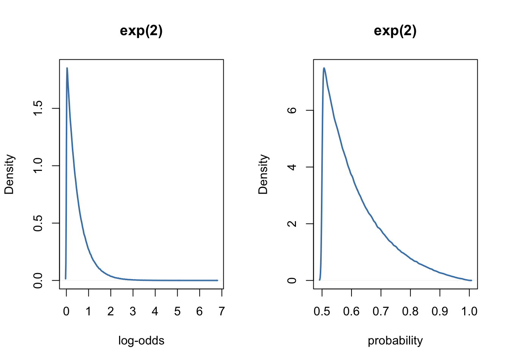

Three methods for computing the intra-class correlation in multilevel logistic regression
In the current post, we present and compare three methods of obtaning an estimation of the ICC in multilevel logistic regression models.
R
Bayesian
brms
Intra-class correlation
Multilevel regression
Author
Ladislas Nalborczyk
Published
2017-10-08
In a previous post, we introduced the mutilevel logistic regression model and implemented it in R, using the brms package. We tried to predict the presence of students that registered for psychological experiments. We also discussed the use of the intra-class correlation (ICC) –also known as the variance partitioning coefficient (VPC)–, as a mean to quantifies the proportion of observed variation in the outcome that is attributable to the effect of clustering.
However, the computation and the interpretation of the ICC in the context of the logistic regression are not straightforward. In the current post, we will then present and compare three methods of obtaining an estimation of the ICC in multilevel logistic regression models.
Getting the data
We will use a dataset contained in the rethinking package, which is used and discussed several times in the Statistical Rethinking book (McElreath, 2016).
dept applicant.gender admit reject applications gender dept_id
1 A male 512 313 825 0.5 1
2 A female 89 19 108 -0.5 1
3 B male 353 207 560 0.5 2
4 B female 17 8 25 -0.5 2
5 C male 120 205 325 0.5 3
6 C female 202 391 593 -0.5 3
7 D male 138 279 417 0.5 4
8 D female 131 244 375 -0.5 4
9 E male 53 138 191 0.5 5
10 E female 94 299 393 -0.5 5
11 F male 22 351 373 0.5 6
12 F female 24 317 341 -0.5 6
These are graduate school applications to 6 different academic departments at UC Berkeley. The admit and the reject columns indicate the number of admission and rejections, respectively. The applications column is the total nuber of applications (i.e., the sum of admit and reject). We would like to estimate whether there is a gender bias in admissions.
Fitting the model
We will then fit a model that include gender as a predictor, to estimate the associattion between gender and the probability of admission. However, as the probability of admission can vary considerably between departments, and as the number of application of males and females can also vary according to the department, we might want to include a varying intercept by department. Thus, we will estimate the grand mean probability of admission, while still allowing each department to have an independant probability of admission.
Although we ignored it in the last post, noteworthy here is that we have to define priors on the log-odds scale… In order to get an intuition of what it means, it might be useful to visualise these priors on both the log-odds scale and the probability scale (i.e., what we are really interested in). To this end, we will use an home-made function called prior_scales, that allows to plot priors on both scales.
prior_scales <-function(prior, ...) {library(LaplacesDemon)# extracting the distribution and its arguments prior_type <-get(paste0("r", sub("\\(.*", "", prior) ) ) prior_args <-gsub(".*\\((.*)\\).*", "\\1", prior)# drawing n samples from the prior n <-1e6 sim <-eval(parse(text =paste("prior_type(n,", prior_args, ")") ) )# plotting the prior in the log-odds scaledens(sim, col ="steelblue", lwd =2, main = prior, xlab ="log-odds")# plotting the prior in the probability scaledens(plogis(sim), col ="steelblue", lwd =2, main = prior, xlab ="probability")}
As we can see, in the weird logit world, the normal and halfcauchy priors tend to favour extreme values. To prevent this, McElreath (2016, page 363) suggests to use exponential priors for the variance components, instead of the normal or halfcauchy priors.
par(mfrow =c(1, 2) )prior_scales(prior ="exp(2)")

The model with the exponential prior can be fitted easily with brms, as follows.
Family: binomial
Links: mu = logit
Formula: admit | trials(applications) ~ 1 + gender + (1 | dept_id)
Data: data (Number of observations: 12)
Draws: 4 chains, each with iter = 1000; warmup = 500; thin = 1;
total post-warmup draws = 2000
Multilevel Hyperparameters:
~dept_id (Number of levels: 6)
Estimate Est.Error l-95% CI u-95% CI Rhat Bulk_ESS Tail_ESS
sd(Intercept) 1.18 0.32 0.70 1.88 1.00 458 518
Regression Coefficients:
Estimate Est.Error l-95% CI u-95% CI Rhat Bulk_ESS Tail_ESS
Intercept -0.65 0.49 -1.67 0.27 1.02 349 428
gender -0.10 0.08 -0.26 0.06 1.00 996 1025
Draws were sampled using sampling(NUTS). For each parameter, Bulk_ESS
and Tail_ESS are effective sample size measures, and Rhat is the potential
scale reduction factor on split chains (at convergence, Rhat = 1).
As previously, we can interpret the variation of the intercept \(\alpha\) between departments by considering the ICC, which goes from 0 if the grouping conveys no information to 1 if all levels of a cluster are identical (Gelman, 2006, p. 258). In other words, ICC = 0 indicates perfect independence of residuals: the observations do not depend on cluster membership. When the ICC is not different from zero or negligible, one could consider running traditional one-level regression analysis. On the contrary, ICC = 1 indicates perfect interdependence of residuals: the observations only vary between clusters (Sommet & Morselli, 2017).
What is the problem?
The ICC is usually expressed as \(\dfrac{\tau^{2}}{\tau^{2} + \sigma^{2}}\), where \(\tau^2\) denotes the variance of the distribution of the varying effects, and \(\sigma^{2}\) the variance of the residuals. However, in the context of logistic regression, there is no direct estimation of the residuals \(\sigma^2\) on the first level. Unlike in the normal case, the level 1 variance depends on the expected value, as \(var(p_{ij}) = p_{ij}(1-p_{ij})\), and the fixed predictor in the model depends on the value of gender. Therefore, as we are considering a function of the predictor variable gender, a simple ICC is not available, even though there is only a single level 2 variance. Furthermore, the level 2 variance is measured on the logistic scale and so is not directly comparable to the level 1 variance (Goldstein, 2010).
In the following, we consider three different approaches to approximate the ICC. Basically, these procedures convert both the between-cluster and the within-cluster variances to the same scale, to allows the subsequent computation of the ICC.
Method 1: The latent variable approach
The latent variable approach considers the observed binary response to represent a thresholded continuous variable where we observe 0 below the threshold and 1 above.
In a logit model we have an underlying logistic distribution for such a variable. We know that the logistic distribution has variance \(\pi^{2} / 3 = 3.29\). We can then take this as the level 1 variance so that now both the level 1 and 2 variances are on the same scale. From there, the ICC is given by the simple formula \(\dfrac{\tau^{2}}{\tau^{2} + \frac{\pi^2}{3}}\).
# extracting tau^2 for the varying intercepttau2 <- brms::VarCorr(model1)[[1]]$sd[1]^2# computing the ICC for the interceptICC1 <- tau2 / (tau2 + (pi^2/3) )ICC1
[1] 0.2965668
Note though that when there are predictors in the model, the ICC should have a conditional interpretation: of the residual variation in outcomes that remains after accounting for the variables in the model, it is the proportion that is attributable to systematic differences between clusters (i.e., in our example between departments).
Goldstein et al. (2002) suggest that the above approach to evaluating the ICC is only appropriate when the binary response can be conceptualized as the discretization of an underlying continuous latent variable (e.g., pass/fail on a test is a binary representation of an underlying continuous latent variable denoting the test score). For a binary outcome such as mortality, they suggest that such an assumption may not be warranted as it is unobservable1.
On the other hand, one can assume that there is an underlying propensity of dying and that an individual dies when he/she reaches a certain threshold… However, Goldstein et al. (2002) described a simulation-based approach that does not require this assumption, and that we will present in the next section.
Method 2: Simulation
While very useful, a characteristic of this simulation-based approach is that it is dependent on specific covariate patterns. Thus, one could conceivably have a different value of the ICC for each distinct covariate pattern (this could be of substantive interest in and of itself). In the following example, we then compute the ICC for every value of the gender predictor, that is for females and for males. The proposed algorithm is as follows.
Simulate a large number \(N\) of varying effects from the varying effects distribution that was estimated by the multilevel logistic regression model: \(\alpha_{dept} \sim \mathrm{Normal}(\alpha, \tau)\).
For a specific covariate pattern (i.e., for a particular chosen value of gender), use each of the simulated random effects drawn previously to compute the predicted probability \(p_{ij}\) of the outcome. For each of these computed probabilities, compute the Level 1 variance: \(v_{ij}=p_{ij}(1-p_{ij})\).
The ICC is then evaluated as: \(\dfrac{Var(p_{ij})}{Var(p_{ij})+\frac{1}{N}\sum_{i=1}^{N}v_{ij}}\).
# extracting the model estimatesest <- brms::fixef(model1)[,1]# starting from hellset.seed(666)# number of simulationsN <-1e5# drawing varying effects from the estimated distribution of varying effectsa_dpt <-rnorm(N, mean = est[1], sd =sqrt(tau2) )# computing the ICC for females# probability of the outcomepA <-exp(a_dpt + est[2] *-0.5) / (1+exp(a_dpt + est[2] *-0.5) )# compute the Bernoulli level-1 residual variancevA <- pA * (1- pA)# mean of Bernoulli variancessA <-mean(vA)# compute the ICCICC2.f <-var(pA) / (var(pA) + sA)# computing the ICC for males# probability of the outcomepA <-exp(a_dpt + est[2] *0.5) / (1+exp(a_dpt + est[2] *0.5) )# compute the Bernoulli level-1 residual variancevA <- pA * (1- pA)# mean of Bernoulli variancessA <-mean(vA)# compute the ICCICC2.m <-var(pA) / (var(pA) + sA)c(ICC2.f, ICC2.m)
[1] 0.2111652 0.2091386
We see that this method provides estimates slightly inferior to the latent variable approach, and indicates no noticeable differences between females and males.
Method 3: Model linearisation (from Goldstein, Browne, & Rasbah, 2002)
Recall that we try to estimate here the probability of admission \(p_{ij}\). Using a first order Taylor expansion (e.g., Goldstein & Rasbash, 1996; Goldstein, 2010), we can rewrite our model and evaluate \(p_{ij}\) at the mean of the distribution of the level 2 varying effect, that is, for the logistic model
Below, we use this method to evaluate the ICC for both females (i.e., gender=-0.5) and males (i.e., gender=0.5).
# evaluating pi at the mean of the distribution of the level 2 varying effectp <-exp(est[1] + est[2] *-0.5) / (1+exp(est[1] + est[2] *-0.5) )# computing var(p)sig1 <- p * (1- p)# computing var(yij)sig2 <- tau2 * p^2* (1+exp(est[1] + est[2] *-0.5) )^(-2)# computing the ICCICC3.f <- sig2 / (sig1 + sig2)# evaluating pi at the mean of the distribution of the level 2 varying effectp <-exp(est[1] + est[2] *0.5) / (1+exp(est[1] + est[2] *0.5) )# computing pi'sig1 <- p * (1- p)# computing var(yij)sig2 <- tau2 * p^2* (1+exp(est[1] + est[2] *0.5) )^(-2)# computing the ICCICC3.m <- sig2 / (sig1 + sig2)c(ICC3.f, ICC3.m)
Intercept Intercept
0.2409388 0.2351795
Here again, the amount of variation by department seem to be similar for both females and males. Below we summarise the results of the three methods.
method 1
method 2
method 3
ICC
0.2965668
0.2111652
0.2409388
Conclusions
Now that you reached the end of this post, I should confess that there exists packages out there that implement these three methods, and even more. The icc function in the sjstats package allow to compute the ICC for models fitted with lme4, while the ICCbin package offer 16 different methods to compute the ICC for binary responses. The iccbin function of the aod package implements three of the four methods described by Goldstein et al. (2002).
In conclusion, it is interesting to note that the VPC and the ICC cease to be the same thing if we allow the slope to vary (Goldstein et al., 2002). We can find more on this topic in Kreft & De Leeuw (1998, page 63):
“The concept of intra-class correlation is based on a model with a random intercept only. No unique intra-class correlation can be calculated when a random slope is present in the model. The value of the between variance in models with a random slope and a random intercept is a combination of slope and intercept variance (and covariance). We know from the discussion of the basic RC model that the variance of the slope (and, as a consequence, the value of the covariance) is related to the value of the explanatory variable x. Thus the intra-class correlation between individuals will be different, in models with random slopes, for individuals with different x-values. As a result the intra-class correlation is no longer uniquely defined”.
But maybe we should keep this for a future post.
References
Click to expand
Austin, P. C., & Merlo, J. (2017). Intermediate and advanced topics in multilevel logistic regression analysis. Statistics in Medicine, 36, 3257-3277.
Bürkner, P.-C. (2017). brms: An R Package for Bayesian Multilevel Models Using Stan. Journal of Statistical Software, 80(1), 1-28. doi:10.18637/jss.v080.i01
Goldstein, H. and Rasbash, J. (1996). Improved approximations for multilevel models with binary responses. Journal of the Royal Statistical Society, A. 159: 505-13.
Goldstein, H., Browne, W., & Rasbash, J. (2002). Partitioning variation in generalised linear multilevel models. Understanding Statistics, 1:223–232.
Goldstein, H. (2010). Multilevel Statistical Models, 4th Edition. John Wiley & Sons, Ltd, Chichester, UK.
McElreath, R. (2016). Statistical Rethinking. Chapman; Hall/CRC.
Snijders, T., & Bosker, R. (1999). Multilevel Analysis. Sage.
Footnotes
See also Snijders and Bosker (1999, Chapter 14) for a further discussion.↩︎
Citation
BibTeX citation:
@online{nalborczyk2017,
author = {Nalborczyk, Ladislas},
title = {Three Methods for Computing the Intra-Class Correlation in
Multilevel Logistic Regression},
date = {2017-10-08},
url = {https://lnalborczyk.github.io/blog/2017-10-10-icc/2017-10-10-icc.html},
langid = {en}
}